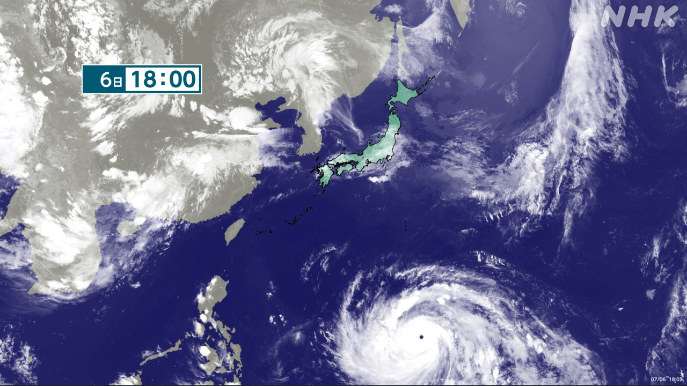

最新ニュース
1️⃣ 雨がたくさん降った 九州北部は災害に気をつけて

6日は、熊本県や長崎県など九州の北部でとてもたくさんの雨が降りました。
雨の多いときは過ぎました。
しかし、気象庁は「山が崩れることがあるかもしれません。気をつけてください」と言っています。
そして、大きくてとても強い台風9号が、日本の南の海を西に進んでいます。
台風は10日金曜日ごろに沖縄の近くに来るかもしれません。台風の新しい情報を確認してください。
2️⃣ イランの前のトップ ハメネイ師の葬式が始まった
イランでいちばん力を持っていた前のトップ、ハメネイ師の葬式が、4日から首都テヘランで始まりました。
ハメネイ師は、2月28日、アメリカとイスラエルの攻撃で殺されました。
葬式に出るために、たくさんの人が集まっています。
イランのメディアは、ハメネイ師の息子3人が葬式に出ているのを伝えました。しかし、国の新しいトップになったハメネイ師の息子のモジタバ師が、どうしているのか伝えていません。
葬式は、9日まで続きます。モジタバ師が葬式に出てくるかどうか、世界が見ています。
3️⃣ サッカーのワールドカップ ブラジルが負けた
サッカー、ワールドカップのニュースです。
決勝トーナメントの1回戦で日本はブラジルに負けました。
ブラジルは2回戦でノルウェーと試合をしました。
前半は0－0でした。後半、ブラジルは有名なネイマール選手を試合に出しました。
しかし、ノルウェーが先に2点を取りました。ネイマール選手はペナルティーキックで1点を返しましたが、試合は2－1でノルウェーが勝ちました。
ブラジルは世界のサッカーランキングで6番目の強いチームです。ランキングが31番目のノルウェーに負けました。
4️⃣ フランス とても暑い日が続いてたくさんの人が亡くなっている
フランスで、とても暑い日が続いています。
6月24日に、パリは40.6℃になりました。今まででいちばん高い気温です。
たくさんの人が、暑さが原因で亡くなっています。
22日から28日までの間に、フランスでは前の週より2025人多い人が亡くなりました。
パリのまちに住む人たちは、暑くて困っています。パリの建物の屋根は、金属の薄い板を使ったものが多くて、太陽の熱を集めます。そのため、部屋は温度が高くなりやすいです。
建物の上のほうに住んでいる人は、屋根に植物などを置いて、太陽の光が入ってくるのを減らしたいと話していました。
- 〜や〜など
- 〜など
- 〜ても / 〜でも
- 〜すぎる
- 〜がある / 〜がいる
- 〜ことがある
- 〜こと
- 〜かもしれない / 〜かもしれません
- 〜ている / 〜でいる
- 〜てください / 〜でください
- 〜から
- 〜ため
- 〜ため(に)
- 〜になる
- 〜し、〜し
- 〜まで
- 〜より
- 〜から〜まで
- 〜やすい
- 〜方
vebaev.github.io
Generated: 2026-07-06 12:48:52 UTC